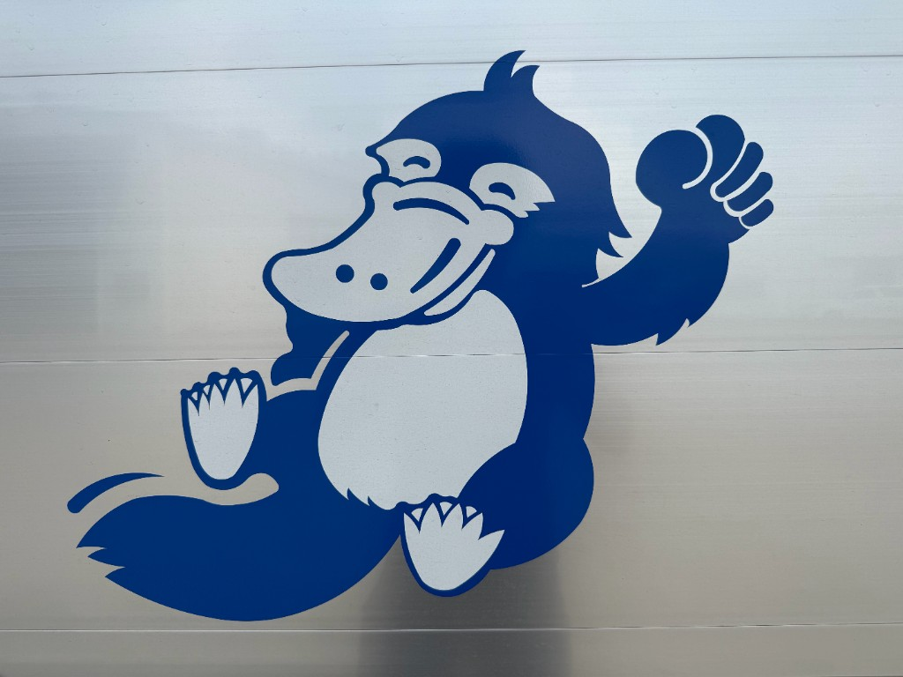

01
定期点検
防火シャッターの検査・点検を実施。報告書を作成し、施設管理者へ結果を報告します。
防火シャッターの点検・修理・部品交換。大手メーカー基準で対応。

防火シャッターの点検・修理。大手メーカー基準で、夜間も対応しています。
伊藤商事は、大手シャッターメーカーとの契約店として、防火シャッターの点検・検査・修理・部品交換・入れ替え・緊急対応を行っています。メーカー基準に沿った品質管理と報告書作成で、商業施設・公共施設・工場などの安全を守ります。
定期点検から障害時の出動まで、一貫して対応。報告書作成など、法令・基準に沿った業務を行います。
防火シャッターの検査・点検を実施。報告書を作成し、施設管理者へ結果を報告します。
故障箇所の修理や部品交換に対応。メーカー基準に沿った部品選定で確実に復旧します。
シャッター本体の更新・入れ替え工事に対応。老朽化した設備の刷新をサポートします。
障害発生時の出動に対応。施設の安全確保を最優先に、迅速な復旧を目指します。

ショッピングセンター・店舗など、来店者の安全確保が求められる施設。
学校・官公庁・公共施設など、防火基準の厳しい建物全般。
産業施設・物流倉庫など、シャッターの稼働停止が業務に直結する現場。
施設名・店舗名は個別に掲載しておりません。
大手メーカーとの契約店として、点検・修理の品質基準を遵守。報告書作成や記録管理を徹底し、施設の防火安全を維持します。
募集要項・給与は採用ページをご覧ください。お急ぎの方は 047-443-3824 まで。